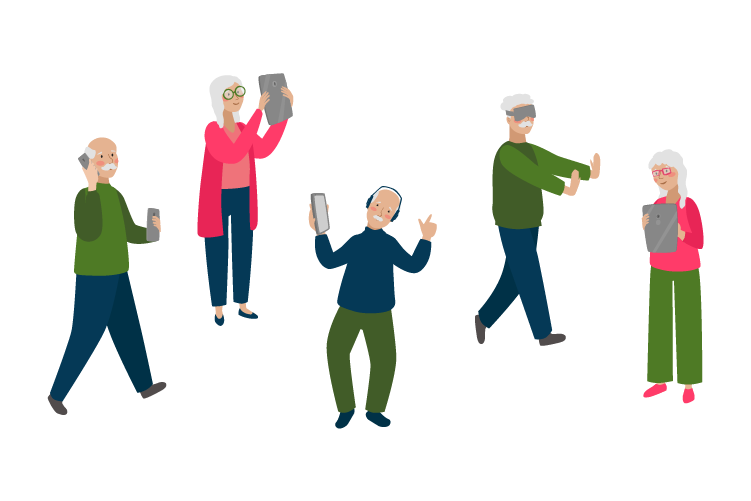

<!DOCTYPE html>
<html lang="en">
<head>
  <meta charset="UTF-8">
  <meta name="viewport" content="width=device-width, initial-scale=1.0">
  <meta http-equiv="X-UA-Compatible" content="ie=edge">
  <title>SabiOld</title>
  <link rel="stylesheet" href="style.css" />
</head>
<body>
  <!-- Considero que podría estar aquí [HEADER] porque es un elemento que se mantiene en común en todas las páginas.
  Sin embargo, por lo que entiendo para llamar directamente al "inicio" en el router sin tanto show,
  probablemente convenga en el js -->
 
  <div id="root"></div>
<!-- inicio de prueba -->

<!--  -->
<!-- fin de prueba -->
 

  <script type="module" src="main.js"></script>
</body>
</html>
